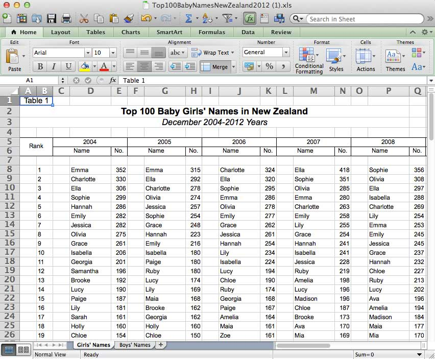
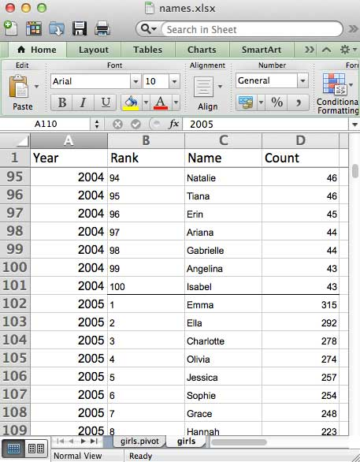
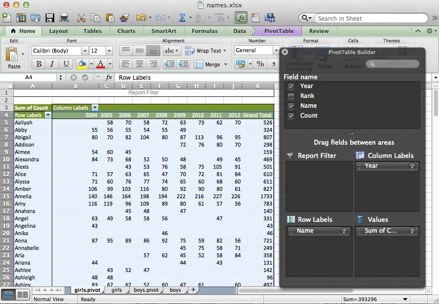
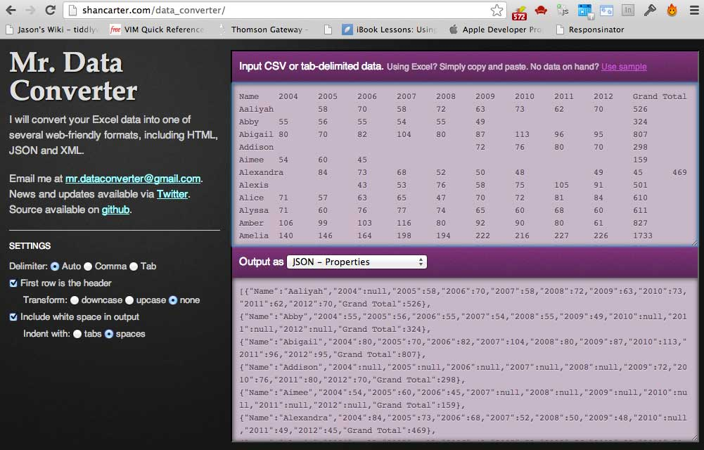
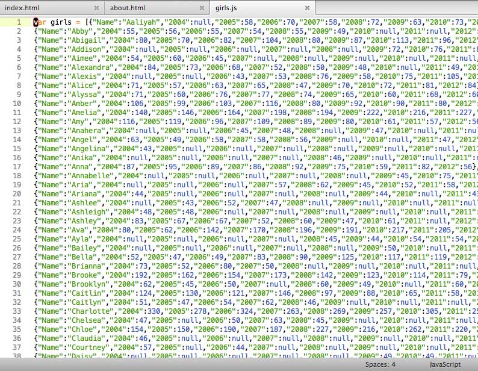
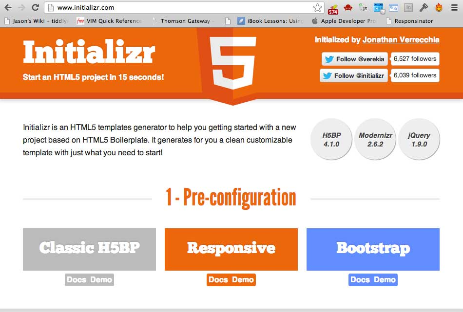
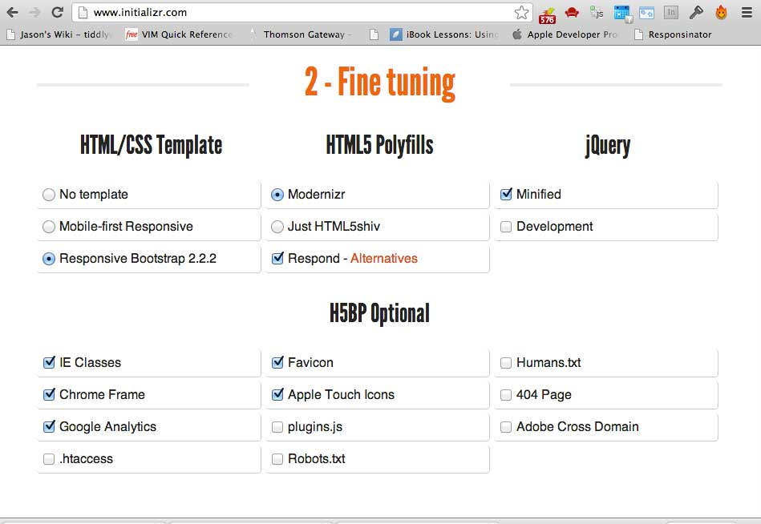

The following notes explain some of the more salient points about putting this visualisation together. All in all, thanks to some realtively clean and easily transformable data, and some useful tools such as Twitter Bootstrap, and the combination of D3.js and xCharts, this visualisation took only a few hours to put together (in fact, it took about as long as it took to put together this about page).
The data originated from New Zealand's Department of Internal Affairs (DIA), and was obtained as an Excel spreadsheet from data.govt.nz. As per the blurb on data.govt.nz:
Excel spreadsheet of the 100 male and female first names for each year since 2004, based on births registered in New Zealand during each year. For name data for 1999 to 2003, please see the Statistics New Zealand website: http://www.stats.govt.nz/methods_and_services/access-data/tables/births.aspx
The spreadsheet data is good for viewing in Excel, however, in order to be able to programmatically use the data, we need to do a bit of cleanup and transformation. As originally obtained, the data looked like the following:

First off, with some some relatively manual quick cut-and-paste, we copy the data into a new spreadsheet, so that each row contains the data for just one combination of name and year:

We then transform the data into an Excel Pivot Table in a new worksheet, allowing us to generate the counts per name by year, and overall totals:

Pivot Tables are one of the great features of Excel for data analysis, and very worthwhile getting to know if you've not come across them before.
Now that we've got our data in the correct form, we need to transform it to a suitable format. What we want is JSON, and there's a number of services and scripts available for help with this conversion. For this project, I used Mr. Data Converter, which is a great browser-based service for converting Excel data into a number of formats, including JSON. Using it was as simple as copying the pivot table data (i.e. all the data points, and the last heading row, as highlighted above in blue), and then pasting this into the top box.
Choosing to output the results as "JSON - Properties", we then obtain a nice JSON dataset, one row per name, with the yearly counts and grand totals of the name frequency:

We can then copy out the results and save them as a JSON data set:

As a starting point for our visualisation, Twitter Bootstrap provides a great jumping-off point, as we get a basic skeleton of HTML, CSS and Javascript, than we can adapt as we need to.. Twitter Bootstrap saves a heck of a lot of time, and is very helpful for promoting good practice, though it needs to be used with the consideration that the in-built styling will need some attention otherwise it will look a lot like a lot of other projects out there that have utilised Bootstrap.

Although Twitter Bootstrap can be downloaded and used as is, we can make life a bit easier for ourselves by using Initializr, a useful service that lets you choose from a number of components when starting a new web project.
In our case we want, at a minimum:

Underscore.js is a lovely little javascript utility library, containing many helpful methods. In our case though, we want it for its templating ability, allowing us to create HTML partials.
<script type="text/template" class="template_combo">
<% _.each( rc, function( baby ){ %>
<option><%- baby.Name %></option>
<% }); %>
</script>
This means that, in our Javascript code, when we're creating the dropdown lists of names to choose from, all we need to do to populate the lists is:
_.templateSettings.variable = "rc";
var template_combo = _.template(
$( "script.template_combo" ).html()
);
$('.select_girl').append(
template_combo( girls )
);
$('.select_boy').append(
template_combo( boys )
);
It could be argued that using a template to achieve just this is overkill, however it doesn't take too much generation of dynamic HTML such as this before the templating functionality that underscore.js provides becomes very useful.
Now we get into the meat and potatoes. We've got some great data, but need to create a visualisation. Specifically, we want:
D3.js is a great Javascript visualisation library that uses SVG, being both very sophisticated but also very flexible. This means that it can be used to produce complex and custom visualisations, but also means that it comes with a relatively steep learning curve (this being the cost of having great flexibility).
This is where xCharts comes in. XCharts provides an abstracted charting layer over D3, providing a simpler interface when using D3 to make charts. There are many dedicated Javascript charting libraries out there that are simpler to use than D3 (which is a visualation library, rather than a charting library), however they quickly become inflexible when you're trying to achieve custom styling and behaviours such as animation.
If xCharts supports the type of chart that you want — and there's currently only a small number, though it does allow you to extend it and create your own chart types — then the combination of xCharts and D3 allows for charting that is:
In fact, it makes life so easy for us, that we only need the following code to hook up our data to our chart, including allowing for the change event when the user chooses from the dropdown box (this is for the girls chart, but the boys chart is almost identical):
// Initialise the girls chart
var girlOpts = { "paddingTop": 20};
var girlChart = new xChart('bar', data_girls_popular, '#girlChart', girlOpts);
$('.select_girl').change(function(){
var girl = $('.select_girl option:selected').text();
$('#girl_heading').html('Popularity of ' + girl + ', 2004 – 2012');
var ind = girls.length;
while( ind-- ) {
if ( girls[ind].Name == girl ){
var data_girls = data_empty_girls;
$.each(girls[ind], function(index, value){
if ( index != 'Name' ){
data_girls.main[0].data.push( {x: index, y: value} );
}
});
}
}
girlChart.setData(data_girls);
});